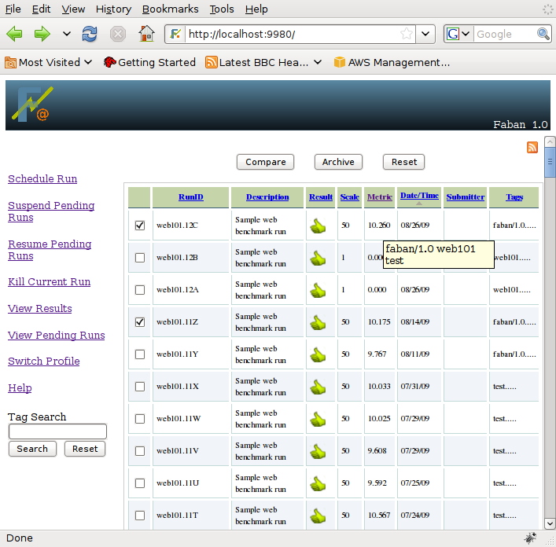
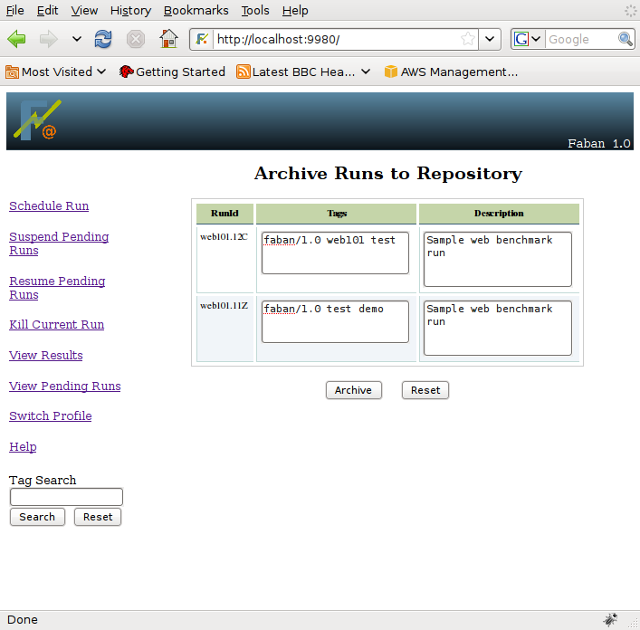

If archiving is enabled and properly
configured, the "Archive" button will appear on the results page, as
seen below. Please refer to Repository
configuration on how to configure archiving.

You might want to archive some run results for future reference.
Select the runs and hit archive button on the top or bottom.
Once you hit the "Archive" button, you will see a page
as shown below. This gives you a last chance to change the description
and the tags before archiving the results on the servers. The fields
are populated by the current description and the current tags:

Just edit the run decription if
you want too. In addition, you can also add and delete tags. After
editing, hit the "Archive" button.